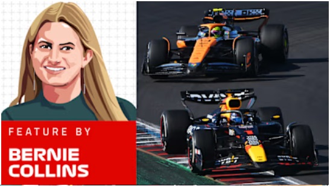

Max Verstappen Tetracampeón del Mundo
Vestappen aseguró su cuarto campeonato en el GP de Las Vegas 2024.
FEATURES
EXCLUSIVO: Los 10 mejores pilotos de F1 de 2024, elegidos por los propios pilotos
FEATURES
INFORME DE FIN DE AÑO: Red Bull - Un cuarto título consecutivo para Verstappen, pero ya no es campeón de constructores
INFORME
"Si no corres riesgos, estás muerto": Fred Vasseur sobre cómo convirtió a Ferrari en un equipo contendiente al título y sus objetivos para 2025
INFORME
INFORME DE FIN DE AÑO: Mercedes - Una temporada inconsistente y una despedida agridulce para Hamilton
FEATURES
ANÁLISIS: Por qué el regreso de Bottas a Mercedes tiene todo el sentido para ambas partes

FEATURES
EL ESTRATEGA: ¿Podría Norris haber vencido a Verstappen por el título si hubiera aprovechado al máximo cada carrera en 2024?
FEATURES
INFORME DE FIN DE AÑO: Aston Martin - Una temporada por debajo de las expectativas pero con incorporaciones clave de alto perfil
Es Alpine
Franco se convierte en el nuevo piloto de reserva del equipo frances para el 2025.